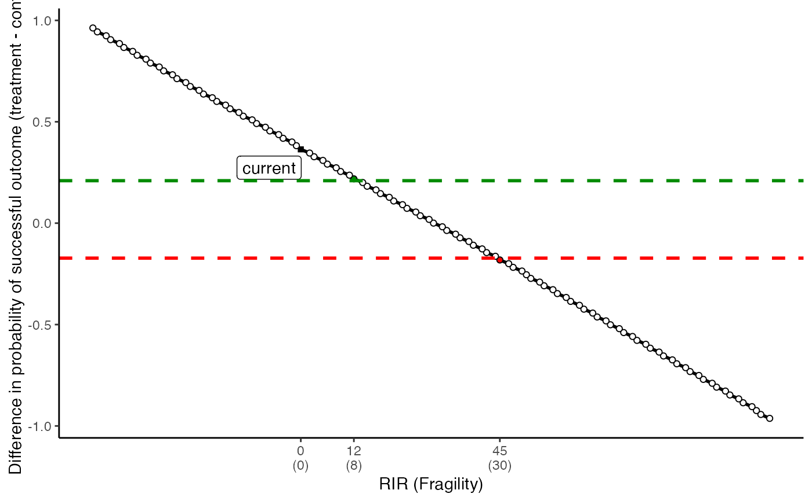
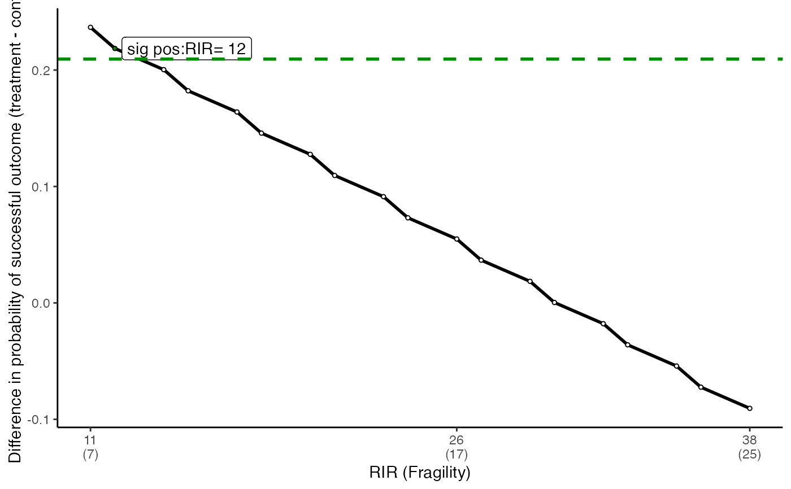
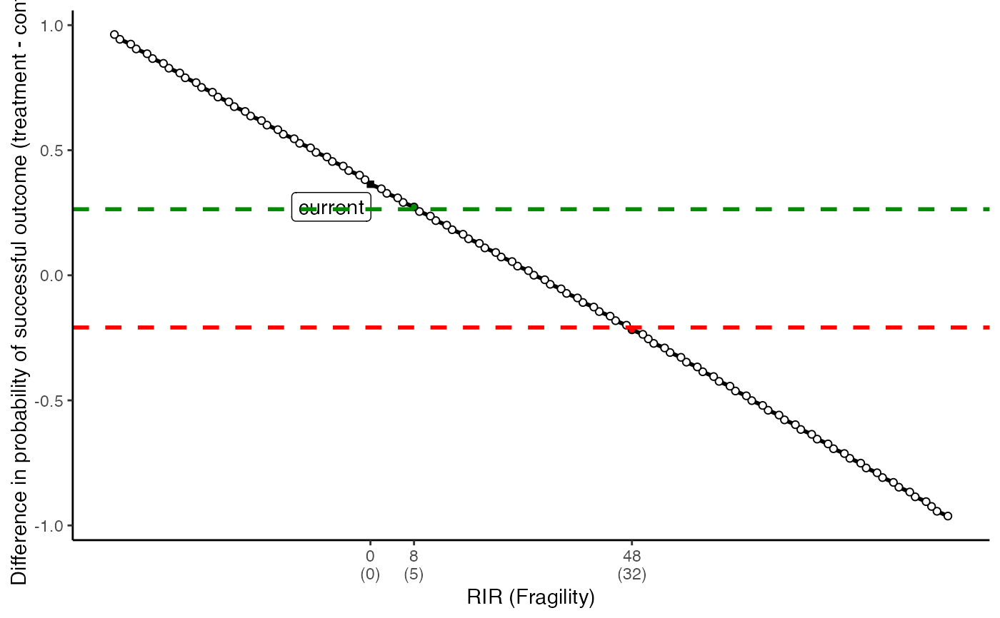
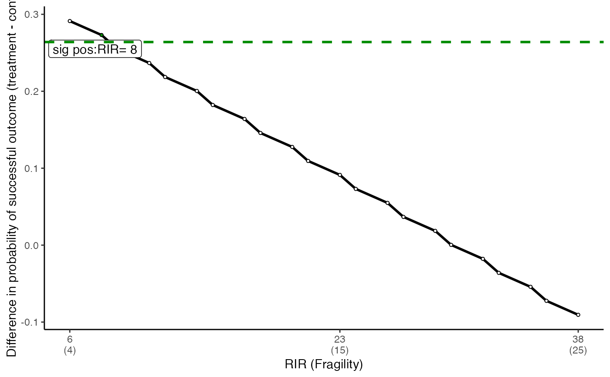
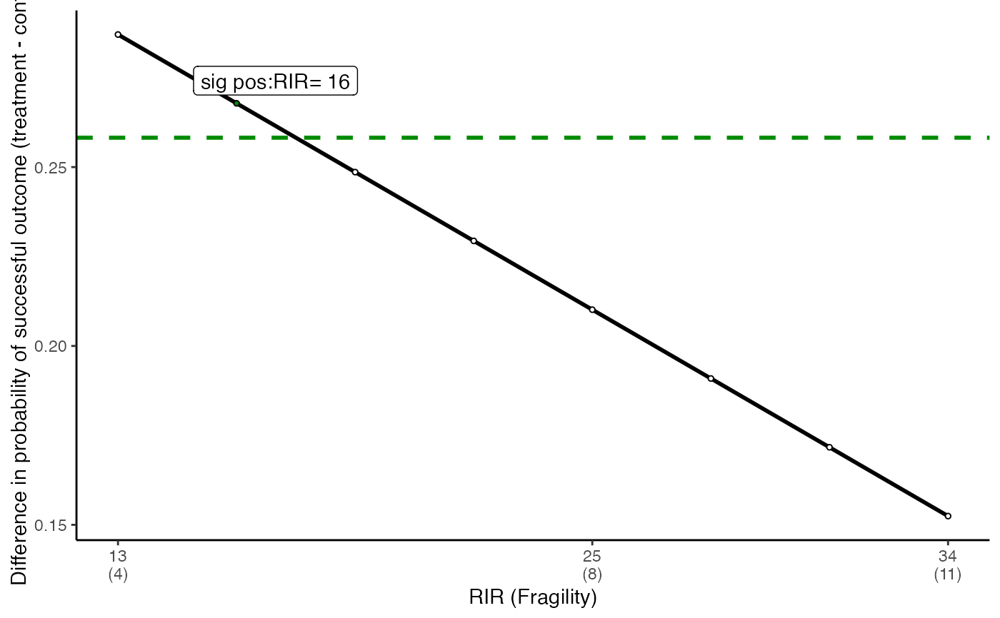

R/tkonfound_fig.R
tkonfound_fig.RdThis function returns two plots for change in effect size as a function of switching outcomes (RIS), one for all possibilities, another zoomed in the area around the two thresholds
tkonfound_fig(a, b, c, d, thr_p = 0.05, switch_trm = T)
| a | cell is the number of cases in the control group showing unsuccessful results |
|---|---|
| b | cell is the number of cases in the control group showing successful results |
| c | cell is the number of cases in the treatment group showing unsuccessful results |
| d | cell is the number of cases in the treatment group showing successful results |
| thr_p | the p-value threshold used to evaluate statistical significance, with the default of 0.05 |
| switch_trm | whether switching the two cells in the treatment row or the two cells in the control row, with the default of the treatment row |
prints 2 figures for how number of hypothetical cases switched changes the effect size
# using tkonfound_fig for a study where 2 by 2 table is (35, 17, 17, 38) tkonfound_fig(35, 17, 17, 38)#> Warning: 'x' has been rounded to integer: Mean relative difference: 1#> [[1]]#> Warning: Removed 103 rows containing missing values (geom_label_repel).#> #> [[2]] #> [1] "A bend in line indicates switches from the control row because the treatment row was exhausted." #> #> [[3]]#> Warning: Removed 18 rows containing missing values (geom_label_repel).#>tkonfound_fig(35, 17, 17, 38, thr_p = 0.01)#> Warning: 'x' has been rounded to integer: Mean relative difference: 1#> [[1]]#> Warning: Removed 103 rows containing missing values (geom_label_repel).#> #> [[2]] #> [1] "A bend in line indicates switches from the control row because the treatment row was exhausted." #> #> [[3]]#> Warning: Removed 21 rows containing missing values (geom_label_repel).#>tkonfound_fig(35, 17, 17, 38, thr_p = 0.01, switch_trm = FALSE)#> Warning: 'x' has been rounded to integer: Mean relative difference: 1#> [[1]]#> Warning: Removed 103 rows containing missing values (geom_label_repel).#> #> [[2]] #> [1] "A bend in line indicates switches from the treatment row because the control row was exhausted." #> #> [[3]]#> Warning: Removed 7 rows containing missing values (geom_label_repel).#>